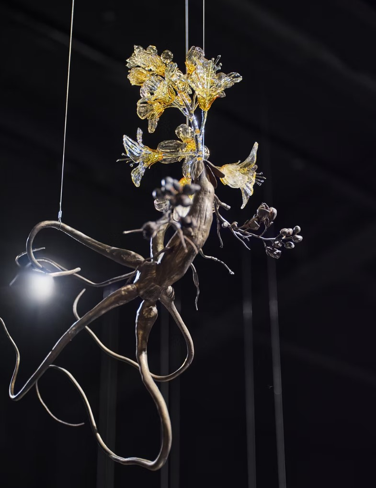

Frank WANG Yefeng

Groundless Flower
Bio
Frank Wang Yefeng is a transdisciplinary artist, researcher, and
digital nomad situated in-between New York City and Shanghai. Initially
trained as a sculptor, Yefeng’s interdisciplinary practice spans a wide
range of media, including video installation, experimental 3D animation,
painting, drawing, and writing. His art explores the experience of
"in-betweenness" that arises from a nomadic transnational existence.
His projects have been featured in exhibitions internationally,
including the BRIC Biennial (SH, CN), the OCAT Biennial (SZ, CN), the WRONG
Biennale (USA), City Project of the 14th Shanghai Biennale (SH, CN), The
Armory Show (NY, USA), Art Basel (HK, CN), CCS Bard Hessel Museum of Art
(NY, USA), Times Square (NY, USA), Smack Mellon (NY, USA), Denver Theater
District (CO, USA), Gasworks London (LDN, UK), Jeju Museum of Contemporary
Art (Jeju, KR), Tai Kwun Contemporary (HK, CN), Hyundai Motorstudio Beijing
(BJ, CN), Shanghai K11 Museum (SH, CN), etc.
Key characteristics of the artist's work
Frank Wang Yefeng’s artwork is experimental and transformative throughout, from physical glass sculptures to digital 3D animations, he has created numerous projects with vastly different media. His background being trained as a sculptor has added to his artistic style where a lot of his figures look carved with an emphasis on textures and layering. Many of his works are shown in video form where elements like sound and lighting are controlled and deliberate, allowing Yefeng to carefully tell a story through the figures and scenes he’s created. The additional usage of typography intertwined in the videos further helping illustrate Yefeng’s art and storytelling.
Offcial SiteAvatopology